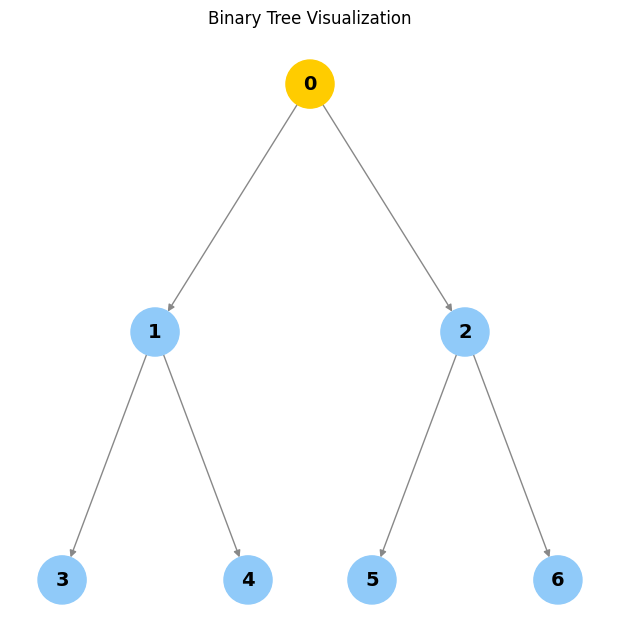
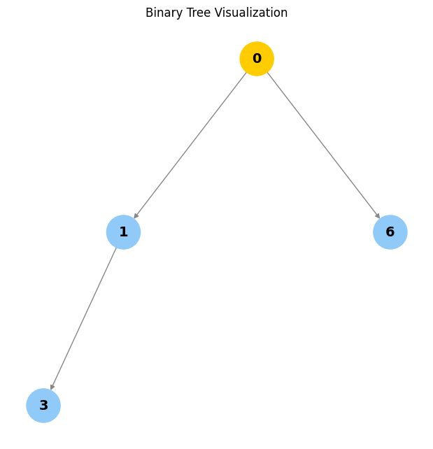
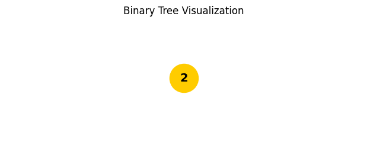
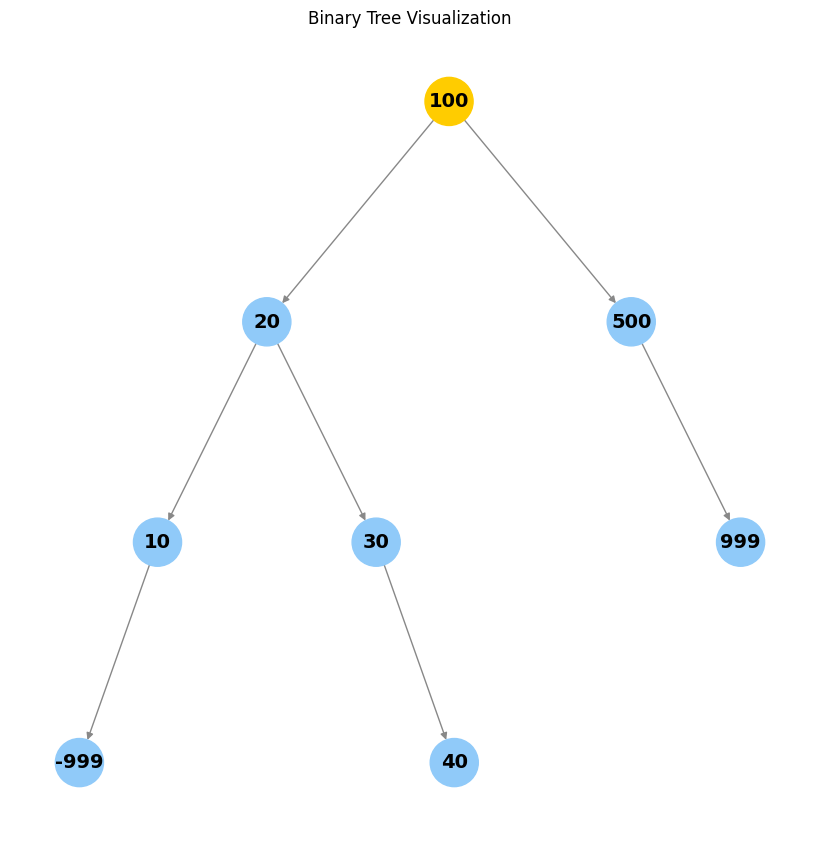
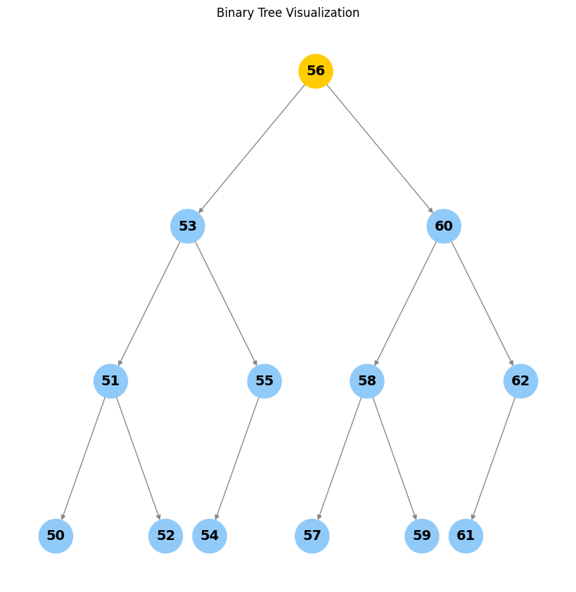

class Node:
"""A node in a binary tree."""
def __init__(self, value, left: "Node|None"=None, right: "Node|None"=None):
self.value = value
self.left: Node|None = left
self.right: Node|None = right
def __str__(self) -> str:
"""A string representation of the node including its value, left, and right children."""
left_value = f"Node({self.left.value})" if self.left else None
right_value = f"Node({self.right.value})" if self.right else None
return f"Node({self.value}, left={left_value}, right={right_value})"
def __repr__(self) -> str:
return self.__str__()Binary Trees: Concepts, Implementation, and Visualization
What is a Binary Tree?
A binary tree is a hierarchical data structure in which each node has at most two children, referred to as the left child and the right child. Binary trees are widely used for efficient data storage, searching, and sorting.
Use cases: - Expression parsing - Hierarchical data representation - Efficient searching and sorting (e.g., BSTs)
Node Structure
Each node in a binary tree contains: - A value (data) - A reference to the left child (or None) - A reference to the right child (or None)
Below is a visual representation of a node:

Creating a Node
Creating a binary tree requires creating a set of nodes.
node1 = Node(1)
node1Node(1, left=None, right=None)root_node = (
Node(1,
Node(2,
Node(4,
Node(8),
Node(9)
),
Node(5,
Node(10),
Node(11)
)
),
Node(3,
Node(6,
Node(12),
Node(13)
),
Node(7,
Node(14),
Node(15)
)
)
)
)
root_nodeNode(1, left=Node(2), right=Node(3))Visualizing a Binary Tree
The function below visualizes a binary tree using NetworkX and Matplotlib. It adapts the layout for larger trees, highlights the root, and provides clear node labels. Optionally, you can display parent pointers or other node attributes by customizing the label logic.
visualize_tree
visualize_tree (root, show_parents=False)
Visualize a binary tree using NetworkX and Matplotlib. Args: root: The root node of the tree. show_parents: If True, include parent values in node labels.
Binary Tree Terminology
- Node: An object with a value, a left child, and a right child.
- Child: A left or right node.
- Parent: A node that has a child node.
- Root: The topmost node in a tree; it does not have a parent.
- Leaf: A node with no children.
- Internal: A node with at least one child node.
- Depth: The number of edges from a node to the root.
- Height: The number of edges on the longest path from a node to a leaf.
Example diagram:
1 (root)
/ \
2 3
/ \ / \
4 5 6 7- Node 1 is the root.
- Nodes 4, 5, 6, 7 are leaves.
- Node 2 is an internal node.
- The depth of node 4 is 2.
- The height of the tree is 2.
Node
Node (value, left:__main__.Node|None=None, right:__main__.Node|None=None, parent:__main__.Node|None=None)
A node in a binary tree with parent pointer.
set_parents
set_parents (node:__main__.Node, parent:__main__.Node|None=None)
Set parent nodes given a root node.
root_node = set_parents(
Node(1,
Node(2,
Node(4,
Node(8),
Node(9)
),
Node(5,
Node(10),
Node(11)
)
),
Node(3,
Node(6,
Node(12),
Node(13)
),
Node(7,
Node(14),
Node(15)
)
)
)
)
root_node.parent, root_node.height, root_node.depth(None, 4, 0)if root_node.left:
print(root_node.left, "depth:", root_node.left.depth)Node(2, left=Node(4), right=Node(5), parent=Node(1)) depth: 1Properties of a Binary Tree
- Maximum nodes: \(2^H - 1\) (where \(H\) is the height)
- Maximum nodes at level \(L\): \(2^L\)
- Minimum height for \(n\) nodes: \(\lceil \log_2(n+1) \rceil\)
These properties help analyze the efficiency of tree operations.
Operations on a Binary Tree
- Traversal: Visiting all nodes in a binary tree.
- Depth-First Search (DFS):
- Preorder (node, left, right)
- Inorder (left, node, right)
- Postorder (left, right, node)
- Breadth-First Search (BFS):
- Level order
- Depth-First Search (DFS):
- Insertion: Adding a new node.
- Deletion: Removing a node.
- Search: Finding a node with a specific value.
Traversal
create_n_nodes
create_n_nodes (num=5)
Creates a perfect binary tree with num nodes.
DFS
Implemented using recursion
root = create_n_nodes(); assert rootdfs_inorder
dfs_inorder (node:__main__.Node)
Inorder DFS traversal: left, node, right.
dfs_preorder
dfs_preorder (node:__main__.Node)
Preorder DFS traversal: node, left, right.
dfs_postorder
dfs_postorder (node:__main__.Node)
Postorder DFS traversal: left, right, node.
BFS
Implemented using a queue
bfs
bfs (node:__main__.Node)
Breadth-first search (level order traversal).
Insertion
Insertion uses BFS to find the first node without a left or right child and inserts the new node there. This keeps the tree as balanced as possible (but does not guarantee a balanced tree).
insert_node
insert_node (root:__main__.Node, value)
Level-order BFS insert. Inserts a new node with the given value.
root = create_n_nodes(7)
insert_node(root, "new1")
insert_node(root, "new2")
insert_node(root, "new3")
insert_node(root, "new4")Search
You can search for a value in a tree using any traversal method. The function below is generic and works with any traversal.
search_tree
search_tree (root:__main__.Node, value, traversal_func:Callable[[__main__ .Node],Generator[__main__.Node,NoneType,NoneType]])
Search for a node with the given value using the specified traversal function.
root = create_n_nodes(7)
print(search_tree(root, 1, dfs_inorder))
print(search_tree(root, 2, dfs_preorder))
print(search_tree(root, 3, dfs_postorder))
print(search_tree(root, 4, bfs))
print(search_tree(root, 5, dfs_inorder))Node(1, left=Node(3), right=Node(4), parent=Node(0))
Node(2, left=Node(5), right=Node(6), parent=Node(0))
Node(3, left=None, right=None, parent=Node(1))
Node(4, left=None, right=None, parent=Node(1))
Node(5, left=None, right=None, parent=Node(2))Deletion
Deleting a node requires: 1. Finding the node to delete. 2. Swapping it with the right-most (deepest) node to preserve structure. 3. Removing the right-most node.
Note: For binary search trees, deletion must preserve the BST property. The method below is for general binary trees.
delete_node
delete_node (root:__main__.Node, value=None)
Deletes the node with the given value by swapping with the right-most node.
visualize_tree(create_n_nodes(7))
visualize_tree(delete_node(delete_node(create_n_nodes(7), 2), 5))
visualize_tree(delete_node(Node(1), 1))
visualize_tree(delete_node(Node(1, left=Node(2)), 1))

Empty tree
Types of Binary Trees
- By children
- Full: Every node has 0 or 2 children.
- Degenerate: Each parent has only one child (like a linked list).
- Skewed: All nodes are either to the left or right.
- By levels
- Complete: All levels are filled except possibly the last.
- Perfect: All internal nodes have two children and all leaves are at the same level.
- Balanced: Height is minimized.
- By values
- Binary search tree (BST)
- AVL
- Red Black
- B, B+
- Segment
Add diagrams or ASCII art for each type for further clarity.
Binary Search Trees (BST)
A binary search tree is a subtype of binary tree that efficiently stores sorted data.
- The left subtree of a node contains only nodes with keys less than the node’s key.
- The right subtree of a node contains only nodes with keys greater than the node’s key.
- The left and right subtree each must also be a binary search tree.
- There must be no duplicate nodes (BSTs may have duplicate values with different handling approaches).
When not to use: Use a hash table if all you need is search, insert, and delete, because a hash table does these operations in O(1) time complexity.
When to use: When you need to maintain a traversable, sorted stream of data you can search, insert, delete, ceiling, max, and min in O(h) time, where h is the tree’s height. There are subtypes of binary search trees (AVL, Red Black Trees) that minimize height.
When rolling out a BST in practice, consider AVL and Red Black Trees to optimize operations.
BST Insertion
When adding a new node, traverse the tree. If the new node’s value is greater than the current node, move right; else move left. Once you hit a leaf node, add the node as a child. Duplicate values are not allowed in this implementation.
bst_insert
bst_insert (root:__main__.Node, new_node:__main__.Node)
Insert a new node into a BST. Raises an exception if value exists.
root = set_parents(
Node(
100,
left=Node(
20,
left=Node(10),
right=Node(30),
),
right=Node(500),
)
)
bst_insert(root, Node(40))
bst_insert(root, Node(999))
bst_insert(root, Node(-999))
visualize_tree(root)
# Uncomment to see exception for duplicate insertion:
# bst_insert(root, Node(30))
def sorted_list_to_bst(vals) -> Node|None:
"""Given a sorted list, returns the root of a balanced BST."""
if not vals:
return None
mid = len(vals) // 2
node = Node(vals[mid])
node.left = sorted_list_to_bst(vals[:mid])
if node.left:
node.left.parent = node
node.right = sorted_list_to_bst(vals[mid+1:])
if node.right:
node.right.parent = node
return node
def generate_balanced_bst(start, n) -> Node|None:
"""Create a balanced BST of values start...start+n-1."""
return sorted_list_to_bst(list(range(start, start+n)))
r = generate_balanced_bst(50, 13)
assert isinstance(r, Node)
visualize_tree(r)
[i.value for i in dfs_inorder(r)][50, 51, 52, 53, 54, 55, 56, 57, 58, 59, 60, 61, 62]bst_search
bst_search (root:__main__.Node|None, key)
Search for a key in a BST. Raises an exception if not found.
bst_search(r, 60)Node(60, left=Node(58), right=Node(62), parent=Node(56))BST Deletion (Overview)
The goal is to delete a node while maintaining order. There are three cases:
- The node is a leaf node (just remove it).
- The node has one child (replace it with its child).
- The node has two children (replace it with its in-order successor or predecessor).
Implementing full BST deletion is left as an exercise.
Tests: Node Creation
n = Node(42)
assert n.value == 42
assert n.left is None
assert n.right is None
n2 = Node(1, left=n)
assert n2.left is n
assert n2.right is NoneTests: Parent Pointer and set_parents
root = Node(1, Node(2), Node(3))
set_parents(root)
assert root.parent is None
assert root.left.parent is root
assert root.right.parent is rootTests: str and repr
s = str(root)
r = repr(root)
assert "Node(1" in s
assert s == rTests: height and depth
tree = create_n_nodes(7)
set_parents(tree)
assert tree.height == 3
assert tree.left.left.depth == 2Tests: Traversals
inorder = [n.value for n in dfs_inorder(tree)]
preorder = [n.value for n in dfs_preorder(tree)]
postorder = [n.value for n in dfs_postorder(tree)]
bfs_order = [n.value for n in bfs(tree)]
assert set(inorder) == set(preorder) == set(postorder) == set(bfs_order) == set(range(7))Tests: Insertion
tree2 = create_n_nodes(3)
insert_node(tree2, 99)
# The new node should be a child of one of the leaves
found = False
for n in [tree2.left, tree2.right]:
if n.left and n.left.value == 99:
found = True
if n.right and n.right.value == 99:
found = True
assert foundTests: Search
tree3 = create_n_nodes(5)
assert search_tree(tree3, 2, dfs_inorder).value == 2
assert search_tree(tree3, 99, dfs_inorder) is NoneTests: Deletion (leaf, one child, root)
t = create_n_nodes(3)
t = delete_node(t, 2)
assert all(n.value != 2 for n in dfs_inorder(t))
t2 = Node(1, Node(2))
t2 = delete_node(t2, 1)
assert t2.value == 2Tests: BST insert and search
bst = Node(10)
bst_insert(bst, Node(5))
bst_insert(bst, Node(15))
assert bst.left.value == 5
assert bst.right.value == 15
try:
bst_insert(bst, Node(5))
assert False, "Duplicate insert should raise"
except Exception:
pass
assert bst_search(bst, 15).value == 15
try:
bst_search(bst, 99)
assert False, "Search for missing value should raise"
except Exception:
passTests: Balanced BST from sorted list
sorted_bst = generate_balanced_bst(0, 7)
assert sorted_bst.value == 3
assert sorted_bst.left.value == 1
assert sorted_bst.right.value == 5
assert [n.value for n in dfs_inorder(sorted_bst)] == list(range(7))